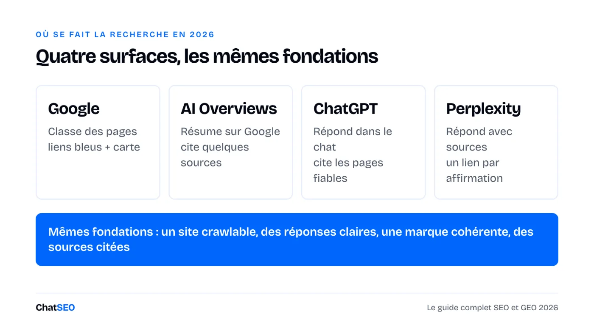
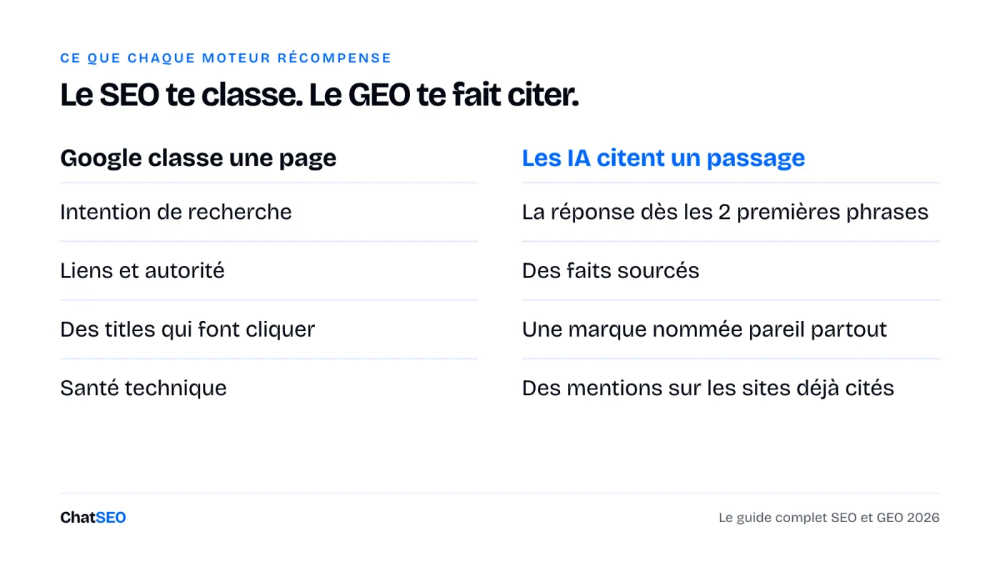
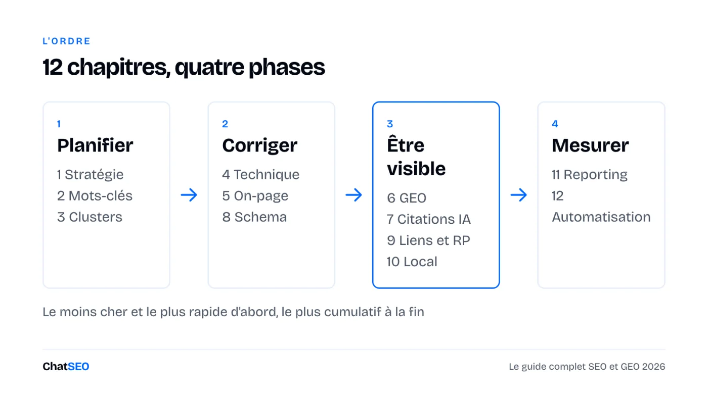

La recherche se fait maintenant sur Google, ChatGPT, Perplexity et dans les AI Overviews. Douze chapitres, de la stratégie à l'automatisation. Pour chacun : ce qui compte en 2026, une checklist courte et le prompt ChatSEO qui fait le travail sur tes propres données.
ChatSEO, l'agent SEO connecté à ta Search Console · 🎁 7 jours offerts
On cherche toujours sur Google. On pose aussi la question à ChatGPT, à Perplexity et à l'AI Overview en haut des résultats. Chacun choisit quelques sources et ignore les autres.

La bonne nouvelle : les fondations sont les mêmes partout. Un site que Google peut explorer, des pages qui répondent à la question dès les premières lignes, une marque nommée pareil partout, et des mentions sur les sites que ces moteurs jugent fiables. Le SEO te fait classer. Le GEO (optimisation pour les moteurs génératifs) te fait citer. Il faut les deux.


Tu n'as qu'une heure ? Fais les chapitres 1, 5 et 11. Ils exploitent le trafic que tu as déjà.
La plupart des SEO échouent avant le premier mot-clé : pas d'objectif, pas de point de départ, donc aucun moyen de savoir si quelque chose a marché. Pars d'un objectif business, puis choisis les pages qui le servent.
Fais l'état des lieux SEO de [URL du site], daté d'aujourd'hui, à partir de la Search Console (28 derniers jours, comparés aux 28 jours précédents) : clics totaux, impressions et position moyenne, séparation des requêtes de marque et hors marque, et les 10 pages qui apportent le plus de clics hors marque. Propose ensuite un objectif SEO trimestriel lié à [objectif business : leads / ventes / inscriptions]. N'utilise que des chiffres issus des données. S'il en manque un, dis-le.
Un mot-clé ne vaut la peine d'être visé que si le type de page correspond à ce que Google affiche déjà. Une requête « meilleur X » attend un comparatif, « X près de chez moi » une page locale, « comment faire » un guide.
À partir de mes requêtes Search Console (3 derniers mois) et des données de mots-clés sur [sujet], liste les 20 mots-clés qui combinent le mieux volume et pertinence pour [URL du site]. Pour chacun : volume mensuel, ma position actuelle s'il y en a une, intention de recherche (s'informer, comparer, acheter, local) et le type de page des 5 premiers résultats. Un seul tableau, trié par opportunité. N'invente aucun volume.
Google et les moteurs IA font confiance aux sites qui couvrent un sujet en entier, pas à ceux qui ont un seul bon article. Un cluster, c'est une page pilier et les pages de soutien qui pointent vers elle.
Construis un cluster de contenu sur [sujet] pour [URL du site] : une page pilier et jusqu'à 12 pages de soutien. Pour chaque page : le mot-clé visé, son intention de recherche, et si une page existe déjà sur mon site (donne l'URL) ou s'il faut la créer. Classe les pages manquantes selon le trafic qu'elles peuvent apporter, en t'appuyant uniquement sur des données de mots-clés réelles.
Pas besoin d'un audit de 200 lignes. Il te faut la poignée de problèmes qui empêchent tes pages importantes d'être explorées, indexées ou chargées vite.
Fais un contrôle SEO technique de [URL du site] : indexation, sitemap, robots.txt (robots IA compris), redirections, liens internes cassés et vitesse de mes 10 pages qui font le plus de clics. Ne garde que les problèmes qui touchent des pages qui apportent du trafic, classés par impact, avec la correction pour chacun. N'indique aucun problème que tu ne peux pas confirmer par le crawl ou la Search Console.
Les gains les plus rapides sont sur les pages déjà classées entre la 4e et la 20e place. Un meilleur title, un premier paragraphe plus clair et deux liens internes peuvent les faire monter sans écrire de nouvelle page.
Trouve les pages de [URL du site] classées entre la 4e et la 20e position dont le taux de clic est inférieur à ce que leur position devrait donner (Search Console, 3 derniers mois). Pour les 10 premières : réécris le title et la meta description, et propose 2 liens internes depuis mes pages les plus fortes. Montre l'actuel et le proposé côte à côte. Attends mon accord avant de modifier quoi que ce soit sur le site.
Avant d'optimiser pour les moteurs IA, mesure où tu en es. Pose les questions que posent tes clients, et regarde qui est cité.
Vérifie ma visibilité dans la recherche IA pour [marque] sur [secteur / ville]. Écris les 10 questions qu'un acheteur poserait à un assistant IA, puis indique pour chacune : si ma marque est citée, quels concurrents le sont, et quelles pages ou quels sites servent de sources. Termine par les 5 sources les plus citées. Ne rapporte que ce que montrent les résultats.
Pourquoi une checklist ne suffit pas. Cette page te donne la méthode et les prompts. Elle ne peut pas lire ta Search Console, explorer ton site ni vérifier cette semaine si ChatGPT te cite. ChatSEO le fait, sur tes vraies données, et publie les corrections validées sur WordPress ou Shopify. Les 7 premiers jours sont offerts.
Les moteurs IA citent des passages, pas des pages. Le passage cité est court, répond directement à la question et contient des faits fiables.
Réécris [URL de la page] pour que les moteurs IA puissent la citer : transforme les titres principaux en questions que les gens posent, place une réponse directe de 1 à 2 phrases sous chacun, et signale chaque affirmation qui a besoin d'une source. Garde mes faits et mon ton. N'ajoute aucun chiffre absent de la page. Montre-moi la nouvelle version avant de publier.
Le schema dit aux moteurs ce qu'est une page : un produit, une entreprise locale, un article, une FAQ. Il ne fera pas classer une mauvaise page, mais il rend une bonne page plus facile à comprendre et à afficher en résultat enrichi.
Vérifie les données structurées de [URL de la page]. Dis-moi quels types de schema elle contient, lesquels elle devrait avoir pour son type de page, et écris le JSON-LD manquant en utilisant uniquement des informations visibles sur la page. Laisse un espace à remplir quand une valeur manque au lieu de la deviner.
Les liens comptent toujours pour Google, et les mentions comptent pour les moteurs IA. Les meilleurs prospects font déjà un lien ou une mention vers tes concurrents.
Trouve des prospects de liens pour [URL du site] face à [concurrent 1] et [concurrent 2] : les sites qui font un lien vers au moins l'un d'eux et pas vers moi, à partir de vraies données de backlinks. Garde les 20 plus pertinents pour [sujet], écarte le spam et les vendeurs de liens, et donne pour chacun la page qui fait le lien et un angle de prise de contact en une ligne.
Si tu sers une ville, le pack local et ta fiche Google Business Profile comptent souvent plus que ton site. La méthode complète est dans le playbook SEO local ; voici l'essentiel.
Audite mon SEO local pour [nom de l'entreprise] à [ville] : la catégorie de ma fiche Google Business Profile, ma position dans le pack local sur [service principal] + [ville], la cohérence de mon nom, adresse et téléphone dans les annuaires, et si j'ai une page par service et par ville. Classe les corrections par impact attendu. Écris « introuvable » quand tu ne peux pas vérifier un point.
Un rapport est utile quand il se termine par une décision. Quatre chiffres, ce qui a changé, et ce que tu feras le mois prochain.
Rédige mon rapport SEO mensuel pour [URL du site] à partir de la Search Console et de GA4 : clics et impressions hors marque comparés au mois dernier, les 5 pages qui ont le plus gagné et les 5 qui ont le plus perdu (avec les requêtes derrière le changement), les conversions issues du SEO, et 3 actions pour le mois prochain, dans l'ordre. Une page maximum. Uniquement des chiffres issus des données.
Automatise la lecture et la rédaction. Garde les décisions et la vérification finale. Une routine hebdomadaire vaut mieux qu'un audit annuel.
Donne-moi la liste d'actions SEO de la semaine pour [URL du site] : compare la semaine dernière à la précédente dans la Search Console, repère les pages et les requêtes qui ont bougé, et liste les 3 actions les plus susceptibles d'apporter des clics cette semaine, chacune avec la page, la modification et la raison. N'inclus rien que les données ne justifient pas.
Connecte ta Search Console une fois. Colle ensuite les prompts ci-dessus, un chapitre à la fois, et valide ce que ChatSEO propose. 7 jours offerts, sans engagement.
Commencer mon essai gratuit 7 jours →